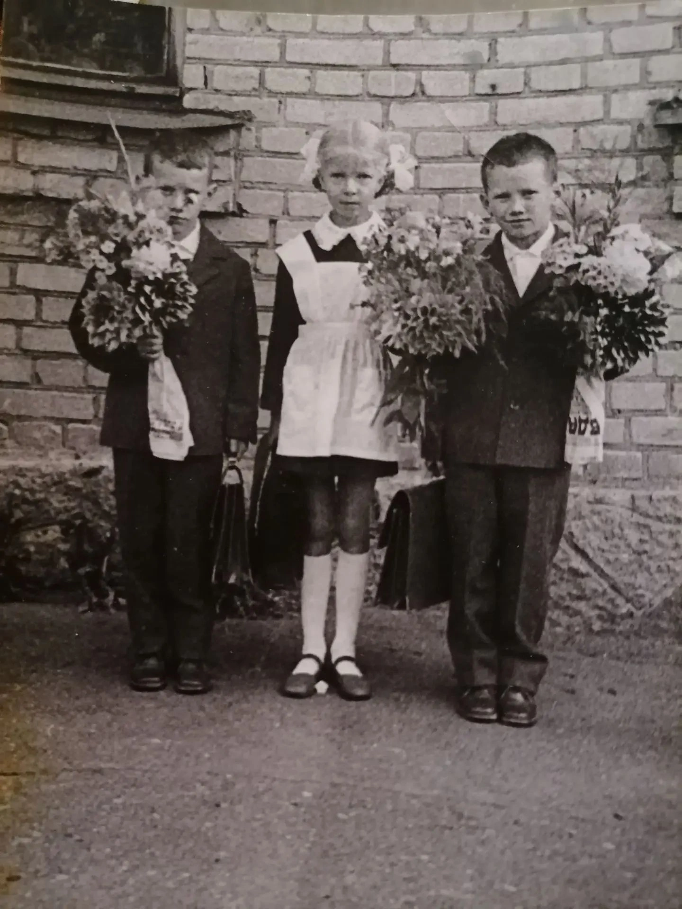
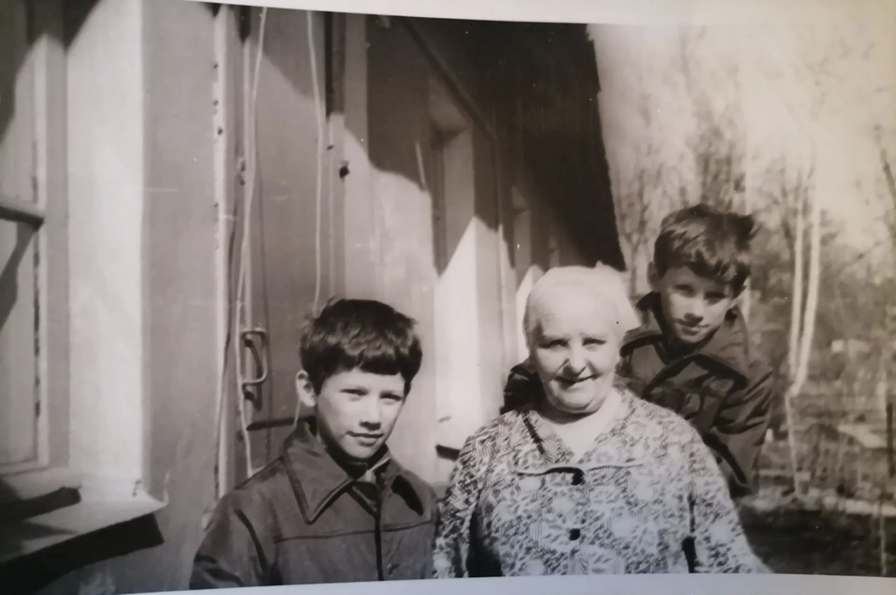
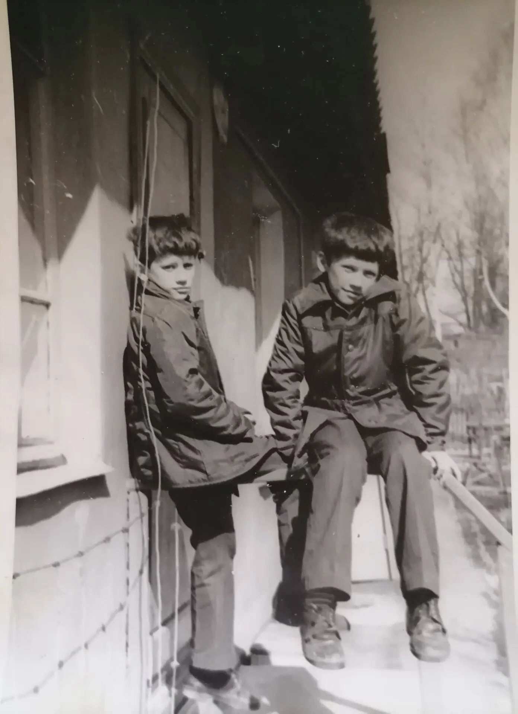
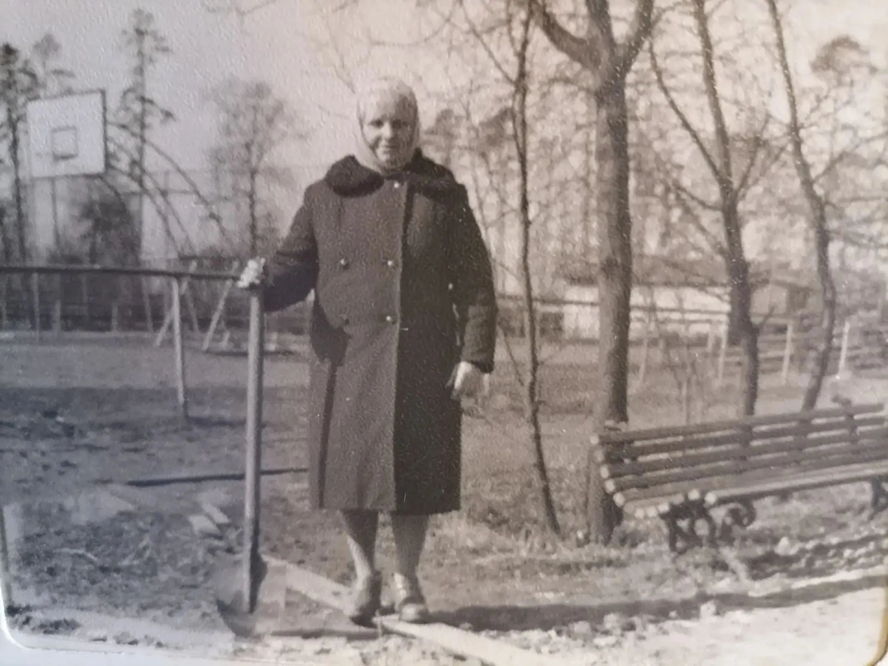

Мы участвуем в городском конкурсе краеведческих выставок «История одной улицы», посвящённом улице Торфяной. Главное условие конкурса — сотворчество: вы можете стать соавторами нашей инсталляции, поделившись старыми фотографиями, документами, воспоминаниями.
Сроки проведения: февраль – ноябрь 2026.
Приём работ – до 30 сентября 2026.
Как участвовать: отправьте свои материалы на нашу электронную почту pargolovo@cbsvib.ru или принесите их лично в библиотеку. Все участники будут отмечены в нашей галерее и на странице конкурса.
Мы только начинаем собирать народный альбом. Пока здесь всего несколько снимков, но каждый из них — это чья-то история, бережно сохранённая в семейном архиве. Если у вас есть фотографии Торфяной улицы разных лет, мы будем рады добавить их в эту галерею. Вместе мы сможем показать, как жила и менялась наша улица на протяжении десятилетий.




Здесь будут ваши воспоминания. Делитесь историями о Торфяной улице!